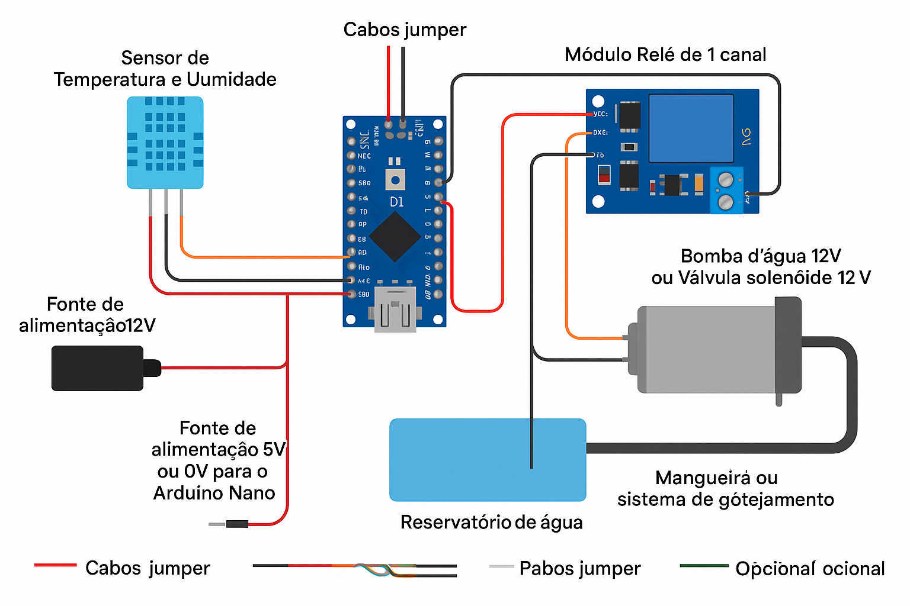

Galeria do Projeto


Um sistema de irrigação automatizado com Arduino
O Fresh Roots é um sistema de irrigação inteligente baseado em Arduino Nano, que ativa uma bomba d'água automaticamente quando a temperatura ultrapassa 30 °C. Ideal para hortas e jardins, ele ajuda a conservar água e manter suas plantas saudáveis.
Monte o circuito conectando o sensor DHT11 ao pino D2 do Arduino, o módulo relé ao pino D3, e conecte a bomba d'água através do relé. O Arduino será alimentado por uma fonte 5V e a bomba por uma fonte de 12V. Você pode ver o diagrama abaixo:
#include <DHT.h>
#define DHTPIN 2
#define RELAY_PIN 3
#define DHTTYPE DHT11
DHT dht(DHTPIN, DHTTYPE);
void setup() {
Serial.begin(9600);
dht.begin();
pinMode(RELAY_PIN, OUTPUT);
digitalWrite(RELAY_PIN, LOW);
}
void loop() {
delay(2000);
float temperature = dht.readTemperature();
if (temperature > 30.0) {
digitalWrite(RELAY_PIN, HIGH);
} else {
digitalWrite(RELAY_PIN, LOW);
}
}Somos uma equipe apaixonada por tecnologia e sustentabilidade. Unimos nossos conhecimentos para criar soluções que ajudam o meio ambiente e facilitam o dia a dia das pessoas.
Jean Tabosa
Gustavo Caetano
Ingrid De Brito
Matheus Souza
Veja abaixo a simulação interativa do nosso sistema de irrigação no Tinkercad:
Nosso objetivo com o projeto Fresh Roots é oferecer uma alternativa simples, econômica e eficiente para irrigação automatizada, promovendo o uso consciente da água e incentivando práticas sustentáveis na agricultura urbana e doméstica.